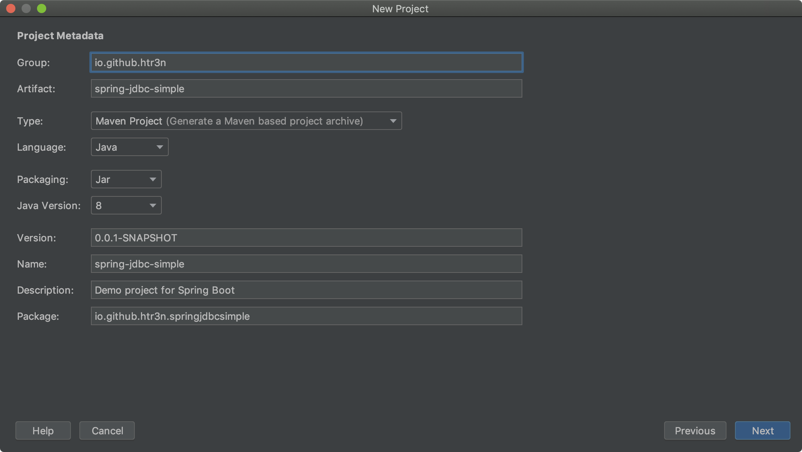
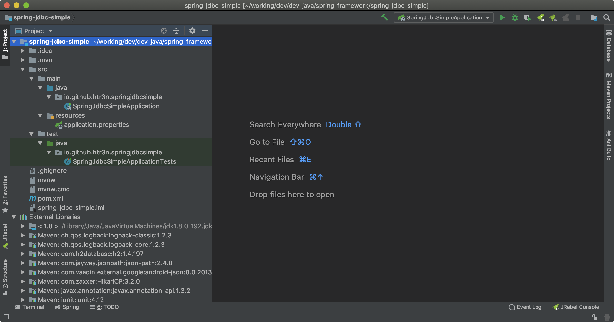
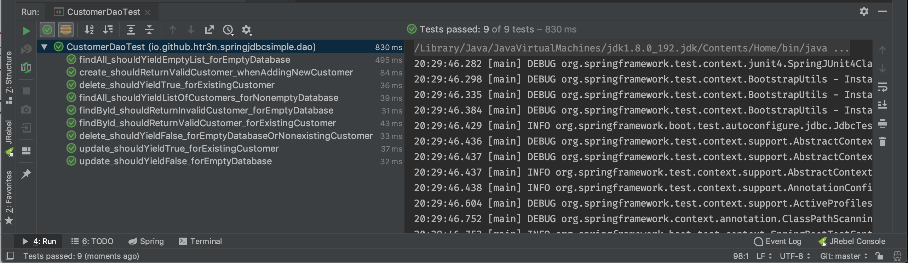

Spring is a popular heavy-weight framework for developing Java/Groovy based applications. Its rich libraries and software stack can cover from front-end to back-end development. In 2009 I used Spring Framework 3 to develop web services and MVC + Hibernate portal for a fictious loan approval process. Despite a tad steep learning-curve, I could manage to get the services and portal up and running and integrated with third-party libraries quite smoothly.
In my prevous projects, I mostly used Spring with Hibernate and/or JPA for higher abstraction level of data access. Coming back working with Spring after few years, I want to delve into lower layer of data access to better understand what behind the scene of Hibernate/JPA abstraction layers. This post is sort of my note-to-self on Spring and JDBC (Java Database Connectivity), especially on JdbcTemplate. Besides, it also reports a tricky case with retrieving data with JdbcTemplate.queryForXXX() employed by several on-line tutorials which was efficiently exposed by appropriate tests.
Background
JDBC defines standard application programming interface (API) based on that a client can access a database. Each database vendor often provides low-level vendor-specific database drivers based on JDBC predefined interfaces. JDBC is considered the lowest recommended abstraction level to work with databases in Java.
In short, a typical approach to database access using JDBC comprises these basic steps:
- Obtain a Connection, e.g. via DriverManager or DataSource
- Create an instance of type Statement or its sub-types such as CallableStatement, PreparedStatement
- Use the aforementioned statement to execute database queries
- Retrieve and process the ResultSet (if any)
- Close the statement and release all resources (connection is AutoCloseable)
Along these steps, we should also handle any database exceptions as well. You can find more details on JDBC programming here. Here is a simple example of accessing databases using JDBC and try-with-resources.
DataSource ds = ...; // obtain a DataSource object
try (
Connection conn = ds.getConnection();
Statement stmt = conn.createStatement()) {
try (ResultSet rs = smmt.executeQuery("SELECT * FROM customer")){
while (rs.next()){
// process the ResultSet
}
} catch (SQLException e2) {
e2.printStackTrace();
}
} catch (SQLException e1) {
e1.printStackTrace();
}
Fortunately, Spring, via JdbcTemplate, ofters a higher level of abstraction on top of Java JDBC that would save us a lot of boiler plate code and enable smooth integration with the rest of Spring framework’s ecosystem. As such, we can leverage other parts of Spring farmework, for instance, the awesome Spring Boot, to automate lots of configuration effort.
A simple CRUD project with Spring JDBC
Nothing is better than a hand-on development project that demonstrate how Spring JDBC works. We can start with Spring Initialzr and Spring Boot to jump start and better concentrate on the main code instead of numerous dependencies and configurations.
There are a few ways to bootstrap a project with Spring Initialzr. Most of the popular Java IDE such as Eclipse or Intellij IDEA with Spring extensions can create a new project via Spring Initialzr. You can also achieve the same result from the web site https://start.spring.io or even using Spring Boot CLI.
Here I will use Intellij IDEA for just showing the necessary steps and dependencies. You can use any of the aforementioned methods to obtain the same result.
Step 1:
Create a new project and choose Spring Initialzr.

Step 2:
Fill in necessary project information, keep default values for project’s type (Maven), language (Java), packaging (Jar), Java version (8).

Step 3:
Choose the section SQL and make sure the checkboxes of H2 and JDBC are ticked.

Step 4:
Finish the project creation wizard.

After Step 4, Intellij IDEA will create a new Maven Spring Boot project with some initial source and configuration files.
By default, the main configuration file for Spring Boot is application.properties.

Defining Domain Entities
We might not need a complex domain model but rather a simple entity mapped to a database table. For example, a Customer entity as shown in Java code and a corresponding customer table.
package io.github.htr3n.springjdbcsimple.entity;
public class Customer {
private Integer id;
private String name;
private String email;
public Integer getId() {
return id;
}
public void setId(Integer id) {
this.id = id;
}
public String getName() {
return name;
}
public void setName(String name) {
this.name = name;
}
public String getEmail() {
return email;
}
public void setEmail(String email) {
this.email = email;
}
}
Configuring Database Connection
Normally, we have to provide sufficient information to establish database connections, for instance, JDBC url, authentication, and maybe some extra parameters. Per convention, Spring Boot can scan for data sources configurations as @Bean or in application.properties.
For better concentraton on test-driven JDBC CRUD, we can leverage @JdbcTest explained in the subsequent section to set up an in-memory embedded database and skip the details on data source configuration for now.
However, we must still initialise the database (otherwise Spring will complain that the table customer does not exist when our application or a test starts). By convention documented here, we simply add a file schema.sql in the folder src/main/resources which contains a simple SQL DDL script for creating a table customer.
DROP TABLE customer;
CREATE TABLE customer(
id integer not null auto_increment,
name varchar(255) not null,
email varchar (255) not null,
primary key (id)
);
Test-Driven CRUD
At the heart of our JDBC project is a CustomerDao.java with basic CRUD methods. The class CustomerDao is annotated with @Repository to indicate this is a data access component that is autodetected through normal Spring’s classpath scanning.
As JdbcTemplate will be used to work with H2 database, we just declared an @Autowired field, the rest will be taken care by Spring.
package io.github.htr3n.springjdbcsimple.dao;
import java.util.List;
import org.springframework.beans.factory.annotation.Autowired;
import org.springframework.jdbc.core.JdbcTemplate;
@Repository
public class CustomerDao {
@Autowired
private JdbcTemplate jdbcTemplate;
// Create
public Customer create(Customer customer) { ... }
// Retrieve
public List<Customer> findAll() {...}
// Retrieve
public Optional<Customer> findById(Integer id) { ... }
// Update
public boolean update(Customer customer) { ... }
// Delete
public boolean delete(Integer id) { ... }
}
CRUD Tests
Before starting implementing the CRUD methods, we create some unit tests in CustomerDaoTest. Again, Spring Boot will help us a lot here with setting up and shutting down properly the testing environment via annotations such as @RunWith and @SpringBootTest. We only need to declare an autowired object CustomerDao.
Spring offers powerful means for database testing, for instance, @Transational and @Rollback. With these annotations, Spring will take care of database transactions as well as rollling back the testing databases to its initial state.
Unfortunately, it would be too tedious to annotate each test method. Spring Boot comes to handy with @JdbcTest that enables several useful features for JDBC tests including an in-memory embedded database as well as transactional and roll back at the end of each test.
IMPORTANTBy default,
@JdbcTestwon’t load regularComponent, and as a result,CustomerDaowon’t be loaded because it is a@Repository, i.e. a sub-type of@Component. Spring will inform us that it fails to find the required autowireCustomerDaoforCustomerDaoTest. To fix this, simply annotationCustomerDaoTestwith@ComponentScan.
This is the whole test case for our tentative CRUD methods.
package io.github.htr3n.springjdbcsimple.dao;
import io.github.htr3n.springjdbcsimple.entity.Customer;
import org.junit.Before;
import org.junit.Test;
import org.junit.runner.RunWith;
import org.springframework.beans.factory.annotation.Autowired;
import org.springframework.boot.test.autoconfigure.jdbc.JdbcTest;
import org.springframework.context.annotation.ComponentScan;
import org.springframework.test.context.junit4.SpringRunner;
import java.util.List;
import java.util.Optional;
import java.util.Random;
import static org.assertj.core.api.Assertions.assertThat;
@RunWith(SpringRunner.class)
@JdbcTest
@ComponentScan
public class CustomerDaoTest {
private static final String ALICE_NAME = "Alice";
private static final String ALICE_EMAIL = "alice@test.com";
private static final String BOB_NAME = "Bob";
private static final String BOB_EMAIL = "bob@test.com";
private static final int ONE_CUSTOMER = 1;
private static final int TWO_CUSTOMERS = 2;
@Autowired
private CustomerDao customerDao;
private Customer alice;
private Customer bob;
@Before
public void setUp(){
alice = new Customer();
alice.setName(ALICE_NAME);
alice.setEmail(ALICE_EMAIL);
bob = new Customer();
bob.setName(BOB_NAME);
bob.setEmail(BOB_EMAIL);
}
@Test
public void create_shouldReturnValidCustomer_whenAddingNewCustomer() {
customerDao.create(alice);
assertThat(alice.getId()).isNotNull();
Optional<Customer> result = customerDao.findById(alice.getId());
assertThat(result).isPresent();
assertThat(alice).hasFieldOrPropertyWithValue("name", ALICE_NAME);
assertThat(alice).hasFieldOrPropertyWithValue("email", ALICE_EMAIL);
}
@Test
public void findById_shouldReturnInvalidCustomer_forEmptyDatabase() {
Optional<Customer> invalidCustomer = customerDao.findById(new Random().nextInt());
assertThat(invalidCustomer.isPresent()).isFalse();
}
@Test
public void findById_shouldReturnValidCustomer_forExistingCustomer() {
customerDao.create(alice);
Optional<Customer> validCustomer = customerDao.findById(alice.getId());
assertThat(validCustomer).isPresent();
assertThat(validCustomer.get().getName()).isEqualTo(alice.getName());
assertThat(validCustomer.get().getEmail()).isEqualTo(alice.getEmail());
}
@Test
public void findAll_shouldYieldEmptyList_forEmptyDatabase() {
List<Customer> noCustomers = customerDao.findAll();
assertThat(noCustomers).isNullOrEmpty();
}
@Test
public void findAll_shouldYieldListOfCustomers_forNonemptyDatabase() {
customerDao.create(alice);
List<Customer> customers = customerDao.findAll();
assertThat(customers).isNotNull().hasSize(ONE_CUSTOMER);
Customer result = customers.get(0);
assertThat(result).hasFieldOrPropertyWithValue("name", ALICE_NAME);
assertThat(result).hasFieldOrPropertyWithValue("email", ALICE_EMAIL);
customerDao.create(bob);
customers = customerDao.findAll();
assertThat(customers).isNotNull().hasSize(TWO_CUSTOMERS);
}
@Test
public void update_shouldYieldFalse_forEmptyDatabase() {
Customer notFound = new Customer();
notFound.setId(new Random().nextInt());
assertThat(customerDao.update(notFound)).isFalse();
}
@Test
public void update_shouldYieldTrue_forExistingCustomer() {
customerDao.create(alice);
assertThat(alice.getId()).isNotNull();
assertThat(customerDao.update(alice)).isTrue();
alice.setName(BOB_NAME);
alice.setEmail(BOB_EMAIL);
assertThat(customerDao.update(alice)).isTrue();
Optional<Customer> found = customerDao.findById(alice.getId());
assertThat(found).isPresent();
assertThat(found.get().getName()).isEqualTo(alice.getName());
assertThat(found.get().getEmail()).isEqualTo(alice.getEmail());
}
@Test
public void delete_shouldYieldFalse_forEmptyDatabaseOrNonexistingCustomer() {
assertThat(customerDao.delete(new Random().nextInt())).isFalse();
}
@Test
public void delete_shouldYieldTrue_forExistingCustomer() {
customerDao.create(alice);
assertThat(customerDao.findAll()).hasSize(ONE_CUSTOMER);
assertThat(customerDao.delete(alice.getId())).isTrue();
assertThat(customerDao.findById(alice.getId()).isPresent()).isFalse();
assertThat(customerDao.findAll()).isEmpty();
}
}
CRUD Implementation
With the tests defined, we can start implementing the CRUD using Spring JdbcTemplate.
Create
To satisfy the test described in create_shouldReturnValidCustomer_whenAddingNewCustomer(), our Customer.create() must successfully save the input Customer and return with an auto-generated primary key (e.g. customer ID). In order to obtain the key, we can use Spring’s helper class KeyHolder along with the standard PreparedStatement. Note that the code was simplified with Java 8 Lambda notation.
// Create
public Customer create(Customer customer) {
String sql = "INSERT INTO customer (name, email) VALUES (?, ?)";
KeyHolder keyHolder = new GeneratedKeyHolder();
this.jdbcTemplate.update(connection -> {
PreparedStatement statement = connection.prepareStatement(sql, Statement.RETURN_GENERATED_KEYS);
statement.setString(1, customer.getName());
statement.setString(2, customer.getEmail());
return statement;
}, keyHolder);
Integer newCustomerId = keyHolder.getKey().intValue();
customer.setId(newCustomerId);
return customer;
}
Please note that, Spring also provides another helper, namely, SimpleJdbcInsert with methods executeAndReturnKey(). Per the class’s documentation, SimpleJdbcInsert is indeed a higher level wrapper of JdbcTemplate.
Retrieve
In this project, we develop two retrieval methods: findAll() will return a list of all customers whilst findById() will look for a certain customer using the input ID.
The method findAll() is rather a piece of cake but findById() is quite tricky. Most of the tutorials or guides on Spring JdbcTemplate I have found on the Internet blindly use the method JdbcTemplate.queryForObject() to look up a database row. Trust me, I made the same mistake, too, along the line of this.
public Optional<Customer> findById(Integer id) {
String sql = "SELECT id, name, email FROM customer WHERE id = ?";
return Optional.of(jdbcTemplate.queryForObject(sql, new Object[] { id }, new CustomerMapper()));
}
Neater and cleaner, eh!? Unfortunately, the aforementioned findById() based on the problematic methods JdbcTemplate.queryForXXX() which is recommended to use in case the query shall return a single row and fails miserably in other cases.
This issue has been exposed by the test findById_shouldReturnInvalidCustomer_forEmptyDatabase() and I was able to come up with a slightly better version that uses JdbcTemplate.query() and checks for the returning ResultSet, in case of non-exiting customer yielding correctly null.
// Retrieve
public List<Customer> findAll() {
String sql = "SELECT * FROM customer";
return this.jdbcTemplate.query(sql, new CustomerMapper());
}
// Retrieve
public Optional<Customer> findCustomerById(Integer id) {
String sql = "SELECT id, name, email FROM customer WHERE id = ?";
return this.jdbcTemplate.query(sql,
rs -> rs.next() ? Optional.of(new CustomerMapper().mapRow(rs, 1)): Optional.empty(),
id);
}
When working with pure JDBC, we must map the database query result onto the domain entity on our own. This can be quickly done by implementing the interface RowMapper<T>.
class CustomerMapper implements RowMapper<Customer> {
@Override
public Customer mapRow(ResultSet rs, int rowNum) throws SQLException {
Customer customer = new Customer();
customer.setId(rs.getInt("id"));
customer.setName(rs.getString("name"));
customer.setEmail(rs.getString("email"));
return customer;
}
}
Update / Delete
The implementation of updating and deletion is rather straightforward.
// Update
public boolean update(Customer customer) {
String sql = "UPDATE customer SET name=?, email=? WHERE id=?";
Object[] params = new Object[]{customer.getName(), customer.getEmail(), customer.getId()};
return this.jdbcTemplate.update(sql, params) == 1;
}
// Delete
public boolean delete(Integer id) {
String sql = "DELETE FROM customer WHERE id = ?";
Object[] params = new Object[]{id};
return this.jdbcTemplate.update(sql, params) == 1;
}
Finally, we finish implementing all necessary CRUD methods and hopefully pass all the aforementioned tests.

You can check out the project source code available on Github.